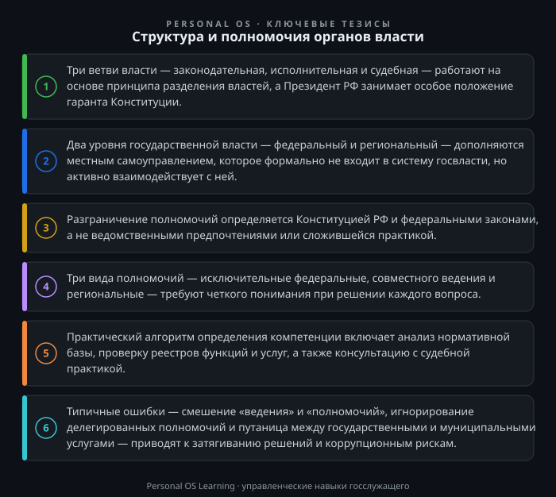

Каждый день, приходя на службу, мы решаем конкретные задачи: готовим ответы на запросы, согласовываем документы, разрабатываем проекты решений. И в этой текучке легко забыть, что наша работа — лишь часть огромного механизма, имя которому — система органов государственной власти. Понимание того, как устроена эта система, кто за что отвечает и где проходят границы полномочий, — это не абстрактное теоретизирование, а базовое профессиональное требование.
Практическая ценность этого знания проявляется каждый день. Когда вы направляете запрос в другое ведомство, нужно точно понимать, в его ли компетенции находится вопрос. Когда вы готовите проект постановления, нужно знать, не выходите ли вы за пределы полномочий вашего органа. Когда возникает спорная ситуация между уровнями власти, нужно быстро определить, кто прав. Ошибка здесь — это не просто неэффективность, это прямой путь к срыву государственной функции, судебным спорам и коррупционным рискам.
В этой статье мы разберем, как устроена система органов власти в Российской Федерации, на каких принципах она держится и как на практике применять эти знания в повседневной работе.
Фундамент всей системы — принцип разделения властей, закрепленный в статье 10 Конституции Российской Федерации Конституция Российской Федерации. Государственная власть в России осуществляется на основе разделения на законодательную, исполнительную и судебную. Это не просто красивая формула — это механизм сдержек и противовесов, который не позволяет ни одной из ветвей сконцентрировать абсолютную власть.
Однако в России есть важная особенность. Президент Российской Федерации формально не входит ни в одну из ветвей власти. Он занимает особое положение — является гарантом Конституции, обеспечивает согласованное функционирование и взаимодействие органов власти. На практике это означает, что глава государства обладает колоссальными полномочиями: от определения основных направлений внутренней и внешней политики до прямого руководства «силовым блоком» и стратегическими ведомствами.
Второе ключевое измерение системы — федеративное устройство. Государственная власть делится на два уровня: федеральный и региональный (субъекты РФ). При этом местное самоуправление, согласно статье 12 Конституции, не входит в систему органов государственной власти — это форма самоорганизации населения для решения вопросов местного значения. На практике это различие часто стирается: муниципальные служащие взаимодействуют с госслужащими ежедневно, а многие государственные полномочия передаются на муниципальный уровень с соответствующими субвенциями.
Законодательная власть представлена Федеральным Собранием — парламентом Российской Федерации, состоящим из двух палат. Государственная Дума принимает федеральные законы, утверждает председателя Правительства, решает вопросы о доверии Правительству. Совет Федерации представляет интересы регионов: одобряет федеральные законы, утверждает указы Президента о введении чрезвычайного и военного положения, назначает на должность судей высших судов, а также проводит консультации при назначении Генерального прокурора (статья 102 и часть 3 статьи 129 Конституции РФ).
Исполнительная власть — это Правительство и федеральные органы исполнительной власти. Здесь важно понимать внутреннюю иерархию, которая постоянно менялась и в текущем виде выглядит следующим образом. Существуют федеральные министерства, федеральные службы и федеральные агентства. Министерства вырабатывают государственную политику и нормативное регулирование, службы осуществляют надзор и контроль, агентства оказывают государственные услуги и управляют имуществом.
Особого внимания заслуживает Указ Президента Российской Федерации от 11.05.2024 № 326 «О структуре федеральных органов исполнительной власти» Указ Президента Российской Федерации от 11.05.2024 № 326 «О структуре федеральных органов исполнительной власти». Этот документ определяет, какие именно ведомства входят в Правительство, а какие подчиняются напрямую Президенту. Например, Министерство внутренних дел, Министерство иностранных дел, Министерство обороны, Министерство юстиции находятся в прямом подчинении Президента. Это не бюрократическая деталь, а важный индикатор того, где сосредоточен реальный рычаг управления.
Судебная власть — это Конституционный Суд, Верховный Суд и нижестоящие суды. Для госслужащего важно понимать, что судебная власть — не только правосудие, но и важнейший инструмент контроля за действиями административных органов. Судебная практика по оспариванию нормативных актов, по делам об административных правонарушениях, по защите прав граждан формирует ту правовую среду, в которой мы работаем.
Субъекты РФ имеют собственную систему органов власти, которая устанавливается в соответствии с Федеральным законом от 21.12.2021 № 414-ФЗ «Об общих принципах организации публичной власти в субъектах Российской Федерации» Федеральный закон от 21.12.2021 № 414-ФЗ «Об общих принципах организации публичной власти в субъектах Российской Федерации» (он пришёл на смену прежнему закону 184-ФЗ, действовавшему с 1999 года). Этот закон — один из ключевых для понимания региональной специфики.
По общему правилу, в каждом регионе есть законодательный орган (например, Законодательное Собрание или Государственное Собрание) и высшее должностное лицо (глава республики, губернатор), которое возглавляет исполнительную власть. Регионы вправе самостоятельно определять структуру исполнительных органов, но в рамках единой системы публичной власти. Это означает, что региональные министерства и ведомства не изолированы, а взаимодействуют с федеральными коллегами в рамках единой системы государственного управления.
Для госслужащего важно понимать разграничение полномочий. Существуют три вида полномочий: исключительные федеральные (оборона, космос, ядерная энергетика), совместного ведения (образование, здравоохранение, культура — здесь принимаются и федеральные законы, и региональные акты) и исключительные региональные (то, что не отнесено к федеральному ведению и совместному ведению). На практике это разграничение — источник множества вопросов и споров. Например, в сфере образования действуют и федеральные образовательные стандарты, и региональные программы развития, и муниципальные требования к содержанию школ. И нужно четко понимать, где заканчивается компетенция одного уровня и начинается другого.
Хотя формально местное самоуправление не входит в систему государственной власти, для госслужащего крайне важно понимать его устройство. Федеральный закон от 20.03.2025 № 33-ФЗ «Об общих принципах организации местного самоуправления в единой системе публичной власти» Федеральный закон от 20.03.2025 № 33-ФЗ «Об общих принципах организации местного самоуправления в единой системе публичной власти» (он действует с 19 июня 2025 года, а прежний закон 131-ФЗ применяется в переходный период до его полного замещения) определяет структуру органов МСУ: представительный орган, глава муниципального образования, местная администрация, контрольно-счетный орган и иные органы.
Почему это важно для госслужащего? Во-первых, значительная часть государственных полномочий передается на уровень местного самоуправления. Например, регион может передать муниципалитетам полномочия по предоставлению мер социальной поддержки. Во-вторых, взаимодействие с муниципальными органами — это ежедневная практика для региональных и федеральных ведомств. В-третьих, разграничение полномочий между уровнями власти — это зона повышенного риска конфликтов и дублирования функций.
Типичная ситуация: гражданин обратился с жалобой на состояние дороги. Если это дорога федерального значения — ответственность несет федеральное ведомство, если регионального — региональный Минтранс, если муниципальная — местная администрация. Умение быстро определить, чья это компетенция, и перенаправить обращение по правилам — это не просто вежливость, а соблюдение закона о порядке рассмотрения обращений граждан.
Теоретическая схема хороша, но как применить её на практике? Вот несколько конкретных инструментов.
Инструмент 1. Анализ нормативной базы. Прежде чем определять, кто отвечает за вопрос, нужно установить, каким нормативным актом он урегулирован. Начните с федерального закона, затем спуститесь к постановлению Правительства, приказу министерства, региональному закону. Каждый уровень добавляет конкретики. Если вопрос касается полномочий, ищите прямые указания в законе: «полномочия органов государственной власти субъекта», «вопросы местного значения», «переданные полномочия».
Инструмент 2. Классификаторы и реестры. Существуют официальные классификаторы функций и полномочий. Например, Единый портал бюджетной системы, реестры государственных и муниципальных услуг. Если функция оказывается в виде услуги — она должна быть в реестре. Если она контрольная — должен быть соответствующий административный регламент.
Инструмент 3. Принцип «трех шагов». Когда вы сталкиваетесь с вопросом о компетенции, пройдите три шага. Шаг первый: определите, относится ли вопрос к ведению РФ, совместному ведению или ведению субъекта. Шаг второй: установите, какой именно орган (министерство, служба, агентство) уполномочен на решение именно этого вопроса. Шаг третий: проверьте, не передано ли полномочие на нижестоящий уровень (региону или муниципалитету). Часто именно третий шаг забывают, что приводит к ошибкам.
Инструмент 4. Анализ судебной практики. Если вы сомневаетесь в разграничении полномочий, обратитесь к судебной практике. Постановления Пленума Верховного Суда, обзоры судебной практики по конкретным категориям дел — это не абстрактные документы, а рабочий инструмент. Суды регулярно дают разъяснения, какой орган и в каком порядке должен рассматривать те или иные вопросы. Потратив час на поиск судебной практики по аналогичному спору, вы можете сэкономить недели на исправление ошибок.
Даже опытные специалисты допускают ошибки. Вот наиболее распространенные.
Смешение понятий «ведение» и «полномочия». Предметы ведения — это сферы общественных отношений (образование, здравоохранение), а полномочия — это конкретные права и обязанности органов власти. Фраза «это в ведении Минздрава» часто неточна: Минздрав имеет полномочия в сфере здравоохранения, но не является единственным органом, который их реализует.
Забывают о делегированных полномочиях. Федеральный закон о передаче части полномочий часто не читают до конца. В результате региональный орган может начать исполнять федеральные полномочия без соответствующей субвенции, что является нарушением бюджетного законодательства.
Путаница между государственными и муниципальными услугами. Это классика. Если услуга оказывается через МФЦ, это не значит, что она стала государственной или муниципальной. МФЦ — это лишь окно доставки услуги, а сама услуга может оставаться государственной (например, выдача паспорта) или муниципальной (например, выдача разрешения на строительство). Важно понимать, какой орган является ответственным за предоставление услуги.
Для закрепления материала предлагаю выполнить три задания. Каждое рассчитано на 15–30 минут и имеет немедленную практическую ценность.
Задание 1. Карта полномочий вашего органа. Возьмите положение о вашем органе власти (или должностной регламент, если вы руководитель). Составьте таблицу из трех колонок: «Вопросы, которые мы решаем самостоятельно», «Вопросы, которые мы согласовываем с вышестоящим органом», «Вопросы, которые мы передаем на нижестоящий уровень». Проверьте, по каждому ли пункту есть ссылка на нормативный акт. Если ссылки нет — это зона риска, которую нужно закрыть.
Задание 2. Разбор конкретного обращения. Возьмите реальное обращение гражданина или организации, поступившее в ваш орган за последний месяц. Определите: (а) к ведению какого уровня относится вопрос, (б) какой орган является ответственным, (в) есть ли основания для передачи обращения по компетенции. Сверьте свой вывод с тем, как обращение было обработано на практике. Если есть расхождение — проанализируйте причину.
Задание 3. Проверка на «пересечение» полномочий. Выберите одну государственную услугу или функцию, в реализации которой участвует ваш орган. Найдите, какие еще органы (федеральные, региональные, муниципальные) участвуют в этой же сфере. Составьте схему взаимодействия: кто принимает решение, кто согласовывает, кто исполняет, кто контролирует. Проверьте, нет ли дублирования функций или «серых зон», где полномочия не определены.
Понимание структуры и полномочий органов власти — это не знание ради знания. Это профессиональный инструмент, который позволяет действовать быстро, точно и законно. Когда вы четко представляете, где чья компетенция, вы избегаете ошибок, которые могут стоить государству миллионов, а гражданам — потерянного времени и нервов. Вы начинаете видеть не отдельные ведомства, а единую систему, в которой каждый элемент выполняет свою функцию. И именно такое системное видение отличает настоящего профессионала государственной службы.

Открыть инфографику в полном размере ↗
Отправить отметку в базу Пройти тест по теме